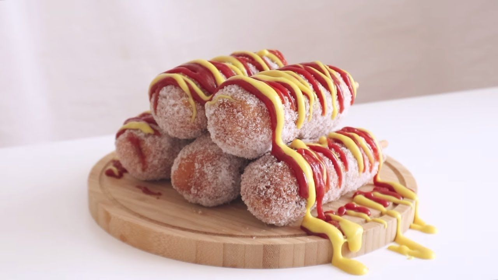

Resep Corn Dog Mozzarella

Bahan-bahan yang diperlukan
- biji jagung kering
- 250 gram mozzarella
- 200 gram tepung terigu
- 2 sendok teh baking powder
- 1 sendok makan gula pasir
- 1/2 sendok teh garam
- 1/2 sendok teh lada bubuk
- 1 butir telur
- 200 ml susu cair full cream
- minyak goreng
- tepung roti
- tusuk sate
Cara membuat